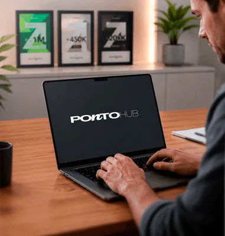
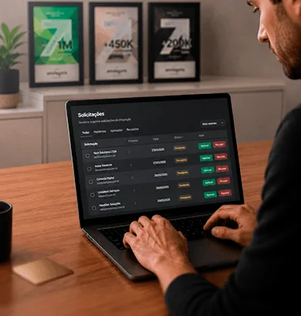
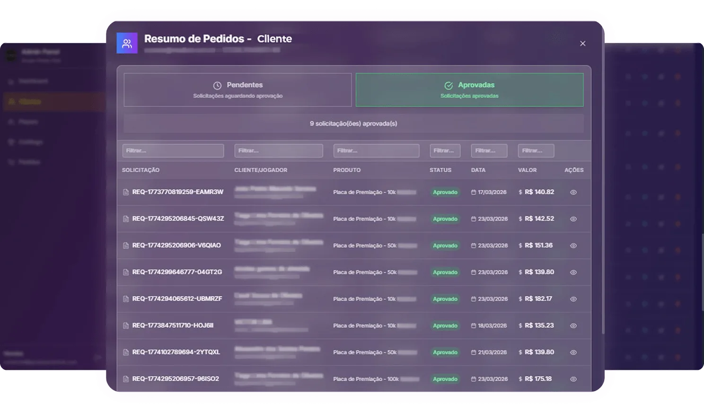
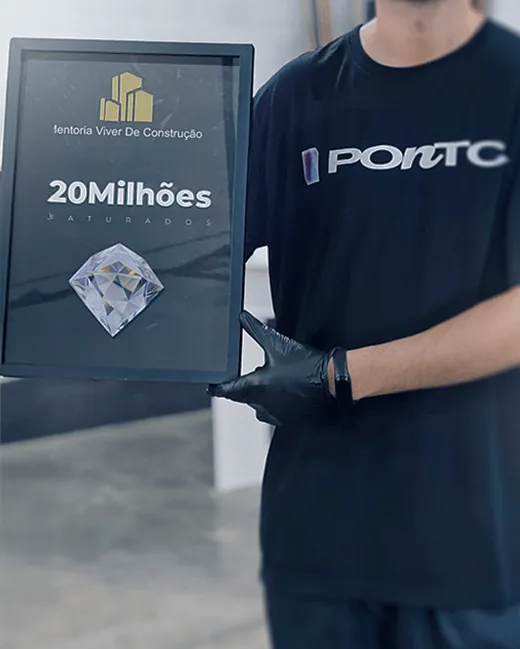

Solicitação inicial
O usuário solicita a premiação diretamente pela plataforma, iniciando o processo de forma rápida e organizada.
Centralize, automatize e acompanhe todo o processo de reconhecimento com dados claros, controle total e escala para crescer com consistência.
Ver plataformaQuando o reconhecimento não é estruturado, ele perde força. Sem controle e dados, sua empresa deixa de gerar impacto, engajamento e escala.
Sem um sistema centralizado, o reconhecimento se torna manual, difícil de acompanhar e sem visão clara de resultados.
A Ponto Hub centraliza e automatiza o processo, trazendo mais controle, dados claros e maior eficiência.
Veja como isso funciona na prática e leve mais controle para o seu processo.
Ver na práticaUm fluxo simples e automatizado que conecta na prática solicitação, aprovação, produção e entrega com controle total e dados em cada etapa.

O usuário solicita a premiação diretamente pela plataforma, iniciando o processo de forma rápida e organizada.

O sistema calcula frete e alcance estimado, trazendo previsibilidade antes da aprovação.

Os pedidos passam por aprovação, permitindo aceitar ou recusar solicitações com total controle.

Após aprovação, a produção inicia automaticamente e o pedido segue com rastreamento até a entrega.
A Ponto Hub transforma o reconhecimento em um processo estratégico, trazendo mais organização, eficiência e inteligência para sua operação.
Gerencie todo o reconhecimento em um só sistema, com mais organização e praticidade.
Automatize o processo e reduza tarefas manuais, ganhando mais eficiência no dia a dia.
Acompanhe pedidos, aprovações e etapas com mais visibilidade e controle.
Tenha dados para entender resultados e tomar decisões mais seguras.
Gerencie grandes volumes sem perder controle ou organização da operação.
A Ponto Hub se integra com a Ponto Placas para conectar gestão e produção em um único fluxo. Você solicita, aprova e acompanha tudo no sistema, enquanto a produção e entrega acontecem de forma automática e eficiente. Isso reduz erros, agiliza o processo e garante mais controle do início ao fim.
Ver integraçãoUma plataforma pensada para trazer eficiência, controle e inteligência ao seu processo de reconhecimento.
Conecta todas as etapas do reconhecimento em um processo único e organizado.
Interface prática que facilita o controle e acompanhamento de todos os pedidos.
Acompanhe métricas e entenda o impacto das premiações no seu negócio.
Gerencie grandes volumes mantendo controle, qualidade e eficiência na operação.
Com gestão inteligente, cada premiação deixa de ser apenas simbólica e passa a gerar controle, organização e mais impacto para sua operação.
Começar agora

O Grupo Ponto sempre foi referência em reconhecimento no mercado digital. Com a evolução da Ponto Hub, ampliamos essa visão, unindo experiência, tecnologia e dados para transformar conquistas em decisões estratégicas. Hoje, ajudamos empresas não apenas a reconhecer resultados, mas a entender, mensurar e crescer com base neles, trazendo mais controle, clareza e inteligência para suas operações diárias.
Centralize, automatize e transforme seu reconhecimento em um processo estratégico, com mais controle, dados e escala para crescer com consistência.
Ver como funciona